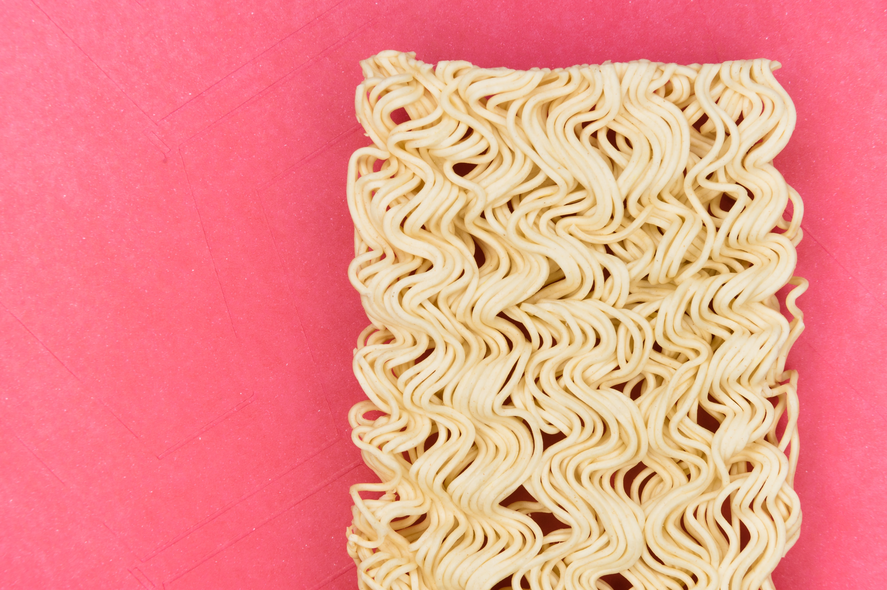

아셨나요 여러분? 팔도비빔면에 양파 썰어 놓으면 존맛입니다. 저는 원래 오이파였는데 최근에 양파파로 갈아탔어요.
이게 중요한게 아니고...
팔도비빔면은 원래 비건이 아니었는데 최근에 성분이 바뀌었습니다. 제가 느낀 맛 차이는... 조금 더 매콤해졌다? 정도예요. (기분 탓일 수도 있습니다.)
요리는 비건으로 해 먹지만 너무 귀찮을 때 팔도비빔면 사먹을 때가 있었는데요. 비건 성분으로 바뀌고 나서부터 기쁘게 먹고 있어요.
이렇게 선택지가 많아지면 채식하는 사람이 늘어날 것 같아요.
